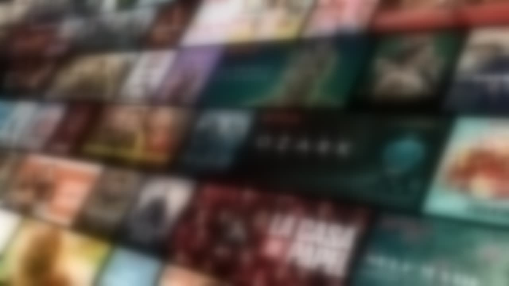

Nova base nativa para TV
Entre com seu codigo e navegue com o controle remoto.
O mesmo Tropical Play da Fire TV e do Roku, agora para Smart TV, Android TV, Fire TV, celular e tablet.
Bem-vindo ao TP Media
Use o teclado numerico fixo do controle para inserir seu codigo.
Codigo de acesso
Navegue com as setas do controle e pressione OK para digitar.
Perfil
Escolha um servidor
Pagamento pendente
Renove seu acesso
Escaneie o QR Code com o celular para abrir a página de pagamento.
Seu acesso está pausado até a confirmação do pagamento.
Depois de enviar o comprovante pelo celular, pressione OK em Já paguei para voltar e validar novamente.
Galeria
Conteudo pronto para abrir
Adicione uma lista M3U, um video, uma foto ou um acesso Xtream.

Tropical Play
Configuracoes
Tropical Play
Seu plano, a senha do controle parental e o contato do suporte.